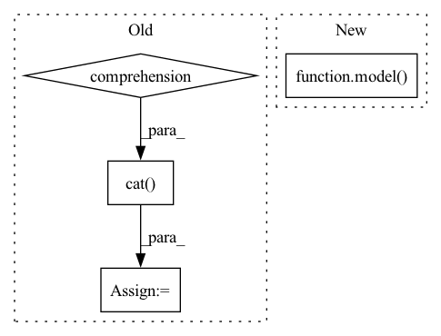

Pattern ID :18212

Before Change
mixture_amplitude = torch.abs(mixture)
estimated_sources_amplitude = {
target: [] for target in __sources__
}
// Serial operation
for _mixture_amplitude in mixture_amplitude:
// _mixture_amplitude: (1, n_mics, n_bins, n_frames)
if n_mics == 1:
_mixture_amplitude = torch.tile(_mixture_amplitude, (1, NUM_CHANNELS_MUSDB18, 1, 1))
elif n_mics == 2:
_mixture_amplitude_flipped = torch.flip(_mixture_amplitude, dims=(1,))
_mixture_amplitude = torch.cat([_mixture_amplitude, _mixture_amplitude_flipped], dim=0)
else:
raise NotImplementedError("Not support {} channels input.".format(n_mics))
for target in __sources__:
_estimated_sources_amplitude = model(_mixture_amplitude, target=target)
if n_mics == 1:
_estimated_sources_amplitude = _estimated_sources_amplitude.mean(dim=1, keepdim=True)
elif n_mics == 2:
sections = [1, 1]
_estimated_sources_amplitude, _estimated_sources_amplitude_flipped = torch.split(_estimated_sources_amplitude, sections, dim=0)
_estimated_sources_amplitude_flipped = torch.flip(_estimated_sources_amplitude_flipped, dims=(1,))
_estimated_sources_amplitude = torch.cat([_estimated_sources_amplitude, _estimated_sources_amplitude_flipped], dim=0)
_estimated_sources_amplitude = _estimated_sources_amplitude.mean(dim=0, keepdim=True)
else:
raise NotImplementedError("Not support {} channels input.".format(n_mics))
estimated_sources_amplitude[target].append(_estimated_sources_amplitude)
estimated_sources_amplitude = [
torch.cat(estimated_sources_amplitude[target], dim=0).unsqueeze(dim=0) for target in __sources__
]
estimated_sources_amplitude = torch.cat(estimated_sources_amplitude, dim=0) // (n_sources, batch_size, n_mics, n_bins, n_frames)
estimated_sources_amplitude = estimated_sources_amplitude.permute(0, 2, 3, 1, 4)
After Change
raise NotImplementedError("Not support {} channels input.".format(n_mics))
_mixture_amplitude = _mixture_amplitude.unsqueeze(dim=1) // (n_flips, 1, n_mics, n_bins, n_frames)
_estimated_sources_amplitude = model(_mixture_amplitude) // (n_flips, n_sources, n_mics, n_bins, n_frames)
if n_mics == 1:
_estimated_sources_amplitude = _estimated_sources_amplitude.mean(dim=2, keepdim=True) // (1, n_sources, n_mics, n_bins, n_frames)
In pattern: SUPERPATTERN
Frequency: 3
Non-data size: 4
Instances
Fragment ID: 59851057
Project Name: tky823/dnn-based_source_separation
Commit Name: 217e98f862f93f0265909ff789fe6b945f207f35
Time: 2021-11-18
Author: delta9guitar97@gmail.com
File Name: egs/tutorials/mm-dense-lstm/src/adhoc_utils.py
M Class Name: AnonimousClass
N Class Name: AnonimousClass
M Method Name: separate_by_mm_dense_lstm(3)
N Method Name: separate_by_mm_dense_lstm(3)
M Parent Class:
N Parent Class:
M File Name: egs/tutorials/mm-dense-lstm/src/adhoc_utils.py
N File Name: egs/tutorials/mm-dense-lstm/src/adhoc_utils.py
M Start Line: 58
M End Line: 132
N Start Line: 19
N End Line: 125
'>
Before Change
feature, order0 = feature
label, order1 = label
feature = torch.cat([f.to(device) for f in feature])
label = torch.cat([l.to(device) for l in label])
origin_feature = torch.empty_like(feature)
origin_label = torch.empty_like(label)
origin_feature[order0] = feature
origin_label[order1] = label
After Change
// origin_label[order1] = label
optimizer.zero_grad()
out = model(feature, adjs)
loss = F.nll_loss(out, label)
loss.backward()
optimizer.step()
// w1.tick("train")
'>
Fragment ID: 59851061
Project Name: quiver-team/torch-quiver
Commit Name: 229241ef652f57e055b9dac0946868822b0b04d7
Time: 2021-03-24
Author: 41138939+ZenoTan@users.noreply.github.com
File Name: benchmarks/ogbn_products_sage/dist_sampling.py
M Class Name: AnonimousClass
N Class Name: AnonimousClass
M Method Name: train(1)
N Method Name: train(1)
M Parent Class:
N Parent Class:
M File Name: benchmarks/ogbn_products_sage/dist_sampling.py
N File Name: benchmarks/ogbn_products_sage/dist_sampling.py
M Start Line: 168
M End Line: 191
N Start Line: 169
N End Line: 205
'>
Before Change
mixture_amplitude = torch.abs(mixture)
estimated_sources_amplitude = {
target: [] for target in __sources__
}
// Serial operation
for _mixture_amplitude in mixture_amplitude:
// _mixture_amplitude: (1, n_mics, n_bins, n_frames)
if n_mics == 1:
_mixture_amplitude = torch.tile(_mixture_amplitude, (1, NUM_CHANNELS_MUSDB18, 1, 1))
elif n_mics == 2:
_mixture_amplitude_flipped = torch.flip(_mixture_amplitude, dims=(1,))
_mixture_amplitude = torch.cat([_mixture_amplitude, _mixture_amplitude_flipped], dim=0)
else:
raise NotImplementedError("Not support {} channels input.".format(n_mics))
for target in __sources__:
_estimated_sources_amplitude = model(_mixture_amplitude, target=target)
if n_mics == 1:
_estimated_sources_amplitude = _estimated_sources_amplitude.mean(dim=1, keepdim=True)
elif n_mics == 2:
sections = [1, 1]
_estimated_sources_amplitude, _estimated_sources_amplitude_flipped = torch.split(_estimated_sources_amplitude, sections, dim=0)
_estimated_sources_amplitude_flipped = torch.flip(_estimated_sources_amplitude_flipped, dims=(1,))
_estimated_sources_amplitude = torch.cat([_estimated_sources_amplitude, _estimated_sources_amplitude_flipped], dim=0)
_estimated_sources_amplitude = _estimated_sources_amplitude.mean(dim=0, keepdim=True)
else:
raise NotImplementedError("Not support {} channels input.".format(n_mics))
estimated_sources_amplitude[target].append(_estimated_sources_amplitude)
estimated_sources_amplitude = [
torch.cat(estimated_sources_amplitude[target], dim=0).unsqueeze(dim=0) for target in __sources__
]
estimated_sources_amplitude = torch.cat(estimated_sources_amplitude, dim=0) // (n_sources, batch_size, n_mics, n_bins, n_frames)
estimated_sources_amplitude = estimated_sources_amplitude.permute(0, 2, 3, 1, 4)
After Change
raise NotImplementedError("Not support {} channels input.".format(n_mics))
_mixture_amplitude = _mixture_amplitude.unsqueeze(dim=1) // (n_flips, 1, n_mics, n_bins, n_frames)
_estimated_sources_amplitude = model(_mixture_amplitude) // (n_flips, n_sources, n_mics, n_bins, n_frames)
if n_mics == 1:
_estimated_sources_amplitude = _estimated_sources_amplitude.mean(dim=2, keepdim=True) // (1, n_sources, n_mics, n_bins, n_frames)
'>
Fragment ID: 59851055
Project Name: tky823/dnn-based_source_separation
Commit Name: 217e98f862f93f0265909ff789fe6b945f207f35
Time: 2021-11-18
Author: delta9guitar97@gmail.com
File Name: egs/tutorials/umx/src/adhoc_utils.py
M Class Name: AnonimousClass
N Class Name: AnonimousClass
M Method Name: separate_by_umx(3)
N Method Name: separate_by_umx(3)
M Parent Class:
N Parent Class:
M File Name: egs/tutorials/umx/src/adhoc_utils.py
N File Name: egs/tutorials/umx/src/adhoc_utils.py
M Start Line: 58
M End Line: 132
N Start Line: 19
N End Line: 125